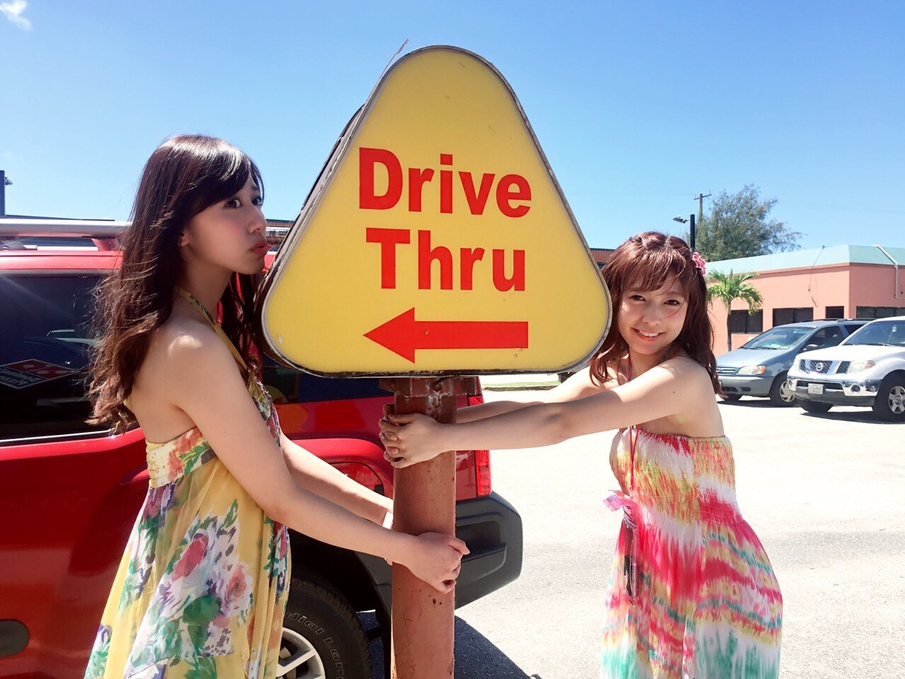
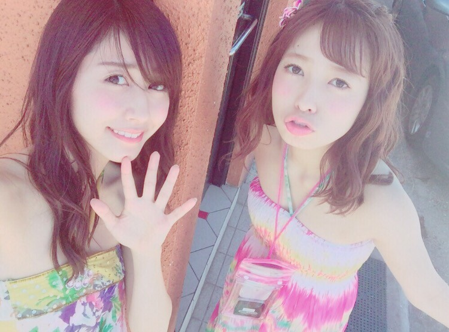

| 2017/01 27 Fri | 1950sの。 |
ちはるーむへようこそ
今日、2年生の後期テストが
全て終わりました〜！！！
この1ヶ月、気が重かった〜...！
正直辛かった〜...
でも無事終わってひと安心◎
お疲れ様、自分。
そして同じくテストが終わった皆さんも
お疲れ様でした！！
まだまだこれからだよ〜って方もいると思います...
私のパワーあげるので頑張ってください(> <)！
にこにこパワー☺︎☺︎
そして今日、テスト終わって
頑張った自分へのプチご褒美として
ずっと行きたかった、
「スヌーピー展」に行ってきました！！

お母さんと一緒に行ったのですが、
スヌーピーが可愛すぎて
2人で悶絶していました...
私たち2人は、1番初期の、
1950sのオールドスヌーピーが大好きなの。
まだ四足歩行で顔も犬っぽくて、
さくちゃんみたいな顔してるスヌーピー！
本当可愛かったな〜...
1番初期のスヌーピーが描かれているグッズは
全部欲しかったくらい！！
さすがに控えたけど...(> <)
でも本当それくらいに好き♡
可愛くて幸せな空間にいられて
本当楽しかった！
テスト頑張って良かったと思えたよ☺︎
逆スヌーピー！笑
スヌーピーは耳が黒いもんね✩
------------------------------------------♡
♬ ChihaMusic
「サクラミツツキ」SPYAIRさん
さくらの季節の曲だったり
さくらの言葉が入ってる曲は
凄い好きなんだけど、
この曲は特に好き！
切なくて寂しいのが良い。
"あれから あれから
あの欠けた月の半分を探して
いつかは いつかは
サクラの花咲く 満月の元へと"
サクラの花びらが満月の下待ってる
情景が浮かぶ。
綺麗。だからこそ余計に切ない。


写真何載せようかな〜って思って
目瞑ってランダムでスクロールしてたら
グアムの時の写真が出てきたよ！
今年もまた海外行けたらいいな( ¨̮ )♡
おやすみ
斎藤ちはる
コメント(312)
2017/01/27 23:58